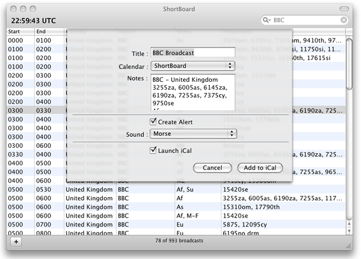

Add Broadcast Schedules to iCal
ShortBoard allows you to add Broadcast schedules to Apple iCal as well as set an alert so you can be notified when the broadcast is about to begin. This can help ensure that you do not miss the specified broadcast.

- Select the broadcast that you want to add to iCal.
- From the application menu, select Broadcasts > Add Broadcast to iCal..., or press the + button in the bottom left of the application window.
- From the Add to iCal sheet which opens, you can modify the title and notes that you want associated with the broadcast.
- Choose the iCal calendar in which you want to schedule the broadcast.
- Choose whether you want to create an iCal alert to be notified 5 minutes before the broadcast.
- If you created an iCal alert, choose whether you want a sound to play with the alert, and if so, which sound.
- Choose whether you want iCal to open to the new event once it is created.
An event for the broadcast will be created within iCal. If you want more advanced control over the event you can modify those from within iCal.